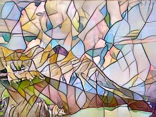
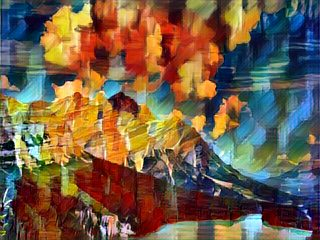
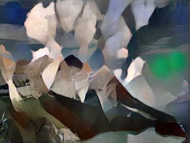
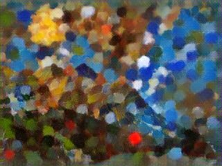

신경망 스타일 변환
화풍 하나를 미리 배운 신경망에 사진을 한 번 통과시키면, 몇 초 만에 그 화풍의 그림이 돼요.
2 화풍 고르기
작은 그림은 같은 예시 사진을 각 신경망에 통과시킨 결과예요. 화풍마다 학습된 신경망이 따로 있어요.
3 변환하기
크기 (긴 변)
256픽셀 · 빠르게
512픽셀 · 보통
768픽셀 · 선명하게 (느림)
변환하기
화풍이나 크기를 바꿨어요. 「변환하기」를 다시 누르면 새 결과가 나와요.
모델: Johnson 외(2016) 빠른 스타일 변환 — PyTorch fast-neural-style 예제와 ONNX Model Zoo(점묘화)의 학습된 모델. 화풍 원작 그림은 싣지 않고 예시 사진을 변환한 결과로 보여 줍니다. 사진은 내 기기 안에서만 처리되고 서버로 보내지 않아요.
작동 원리
✕
한 번 통과시키면 끝
이 신경망은 화풍 그리는 법을 미리 배워 뒀어요. 그래서 사진을 넣으면 몇 초 만에 그림이 나와요.
내용 점수 모양·윤곽이 원래 사진과 비슷한가?
화풍 점수 색·붓질 느낌이 화풍 그림과 비슷한가?
미리 해 둔 일: 학습
화풍 그림 1장과 사진 수만 장으로 연습했어요. 두 점수가 좋아지도록 신경망 속 숫자(가중치) 약 168만 개 를 조금씩 고치기를 수만 번 반복했어요.
156 182 201 …
→
합성곱 층
→
183 160 169 …
지금 하는 일: 숫자 통과
사진은 가로 × 세로 × 3(R·G·B) 개의 숫자예요. 512×384 사진이면 약 59만 개! 이 숫자들이 신경망을 한 번 통과하면 같은 크기의 새 숫자가 나와요.




화풍마다 신경망이 하나씩
모자이크 신경망은 모자이크만 그려요. 그래서 화풍을 바꾸면 다른 모델 파일(약 6.7MB)을 새로 받아요.
화풍 강도는 간단한 계산
신경망이 아니라 픽셀마다 하는 곱셈과 덧셈이에요.
결과 = (1 − t) × 원본 + t × 변환
크기를 바꾸면 붓 터치가 달라져요
신경망이 배운 붓 터치는 픽셀 크기가 정해져 있어요. 그래서 큰 사진일수록 붓 터치가 상대적으로 작고 촘촘해 보여요.
방법 쓸 수 있는 화풍 속도
처음 나온 방법 (2015)픽셀을 수백 번 고침 아무 그림이나 느림 빠른 방법 (2016) · 이 페이지미리 학습한 신경망에 한 번 통과 학습한 화풍만 빠름 임의 화풍 변환그림의 특징을 함께 넣음 아무 그림이나 빠름
다른 방법과 비교
아무 그림이나 화풍으로 쓰고 싶다면 임의 화풍 변환 을 해 보세요.